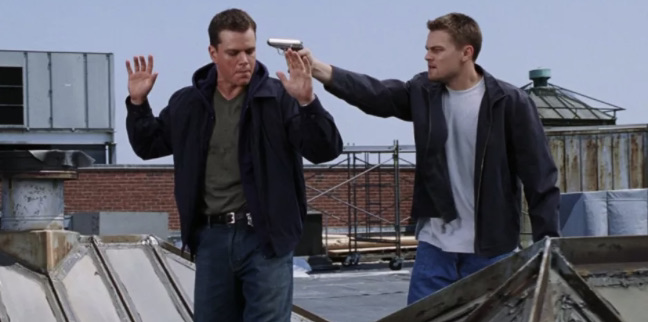
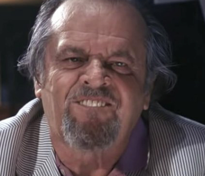

The Departed (pronounced The Deh-pah-ded) tells the story of one cop who is a rat for the Irish mob and another cop who is undercover in that very same mob. Pretty crazy, right?
But actually the crazy part is the performance of Jack Nicholson, who really gives 110%.
The film netted Scorsese a Best Director Academy Award, which he probably shouldn't have won for this movie, but really...why not?